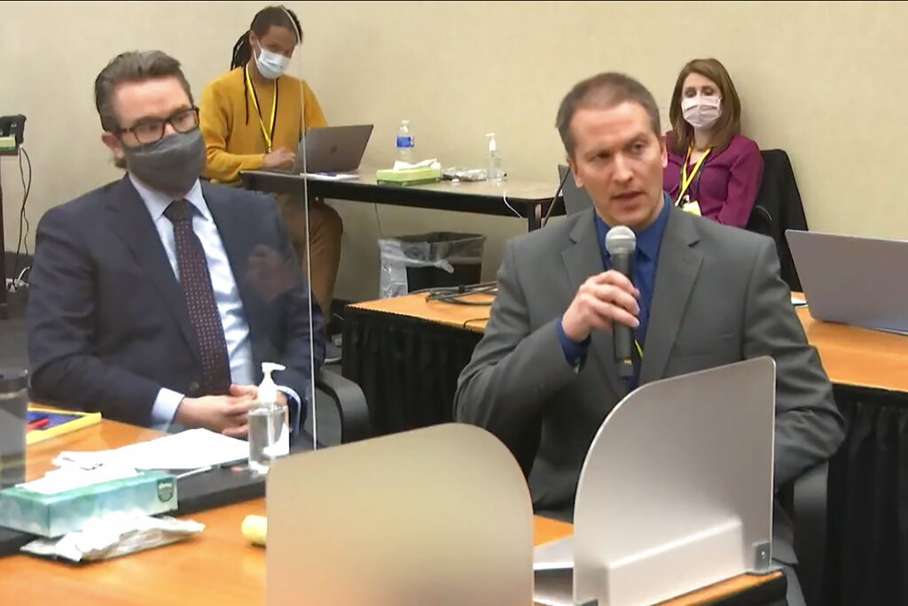
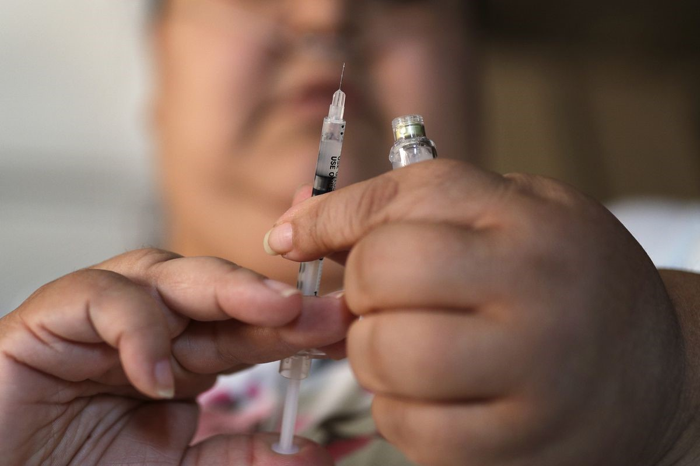

¿La vacuna COVID-19 realmente puede provocar infertilidad?
Aún existen muchos mitos y creencias alrededor de la vacuna COVID-19, lo que ha provocado indecisión entre la gente sobre si aplicársela.
Una de las grandes incógnitas se centra en una afirmación viral que afirma que la inyección puede afectar la fertilidad de una persona.
La Doctora Jane Kelly, epidemióloga estatal adjunta del Departamento de Salud y Control Ambiental de Carolina del Sur, ha escuchado esa aseveración con frecuencia.
Sin embargo, los médicos dicen que no hay evidencia que respalde las afirmaciones de que la vacuna causa problemas a las personas que desean tener un hijo.
'No se deje engañar por las teorías de la pseudociencia y la conspiración', dijo Kelly a WCNC.
'Las vacunas no disminuyen su fertilidad ni causan esterilidad'.
El Doctor David Priest, un especialista en enfermedades infecciosas de Novant Health tiene una teoría al respecto.
Considera que el origen del mito se deriva de una afirmación acerca de que las personas vacunadas eliminan la proteína del pico del virus.
'Esencialmente, la gente dice de manera inexacta y desafortunadamente cree que las personas que han recibido la vacuna pueden eliminar la proteína del pico', dijo Priest.
'Y que esto causa irregularidades en el ciclo menstrual, abortos espontáneos y esterilidad en las mujeres'.
'Eso simplemente no es cierto; no hay evidencia que apoye ese mito'.
Según los Centros para el Control y la Prevención de Enfermedades, las garantías sobre la seguridad de la fertilidad no solo se aplican a la inyección de COVID-19.
Sino que se aplica a cualquier vacuna.
'Si está tratando de quedar embarazada ahora o quiere quedar embarazada en el futuro, puede recibir una vacuna COVID-19', según los CDC.
'Actualmente no hay evidencia de que ninguna vacuna, incluidas las vacunas COVID-19, cause problemas de fertilidad— problemas para intentar quedar embarazada'.
De hecho, aparentemente hay más evidencia de lo contrario.
'Sabemos que en los ensayos de Pfizer, las mujeres quedaron embarazadas durante esos estudios', dijo Priest.
'Y no hubo un solo informe de pérdida de embarazo en ninguna persona que recibió la vacuna real'.
'Hubo una pérdida de embarazo en una persona que recibió el placebo'.
MÁS NOTICIAS RELACIONADAS:
Posted On: 2021-05-05T00:00:00
Posted By: Martín Avilés


Content Date: 2021-05-05
Download Date: 2021-09-16
Document ID: L0C04G7IN